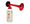

De: La Frikipedia, la enciclopedia extremadamente seria.
De: La Frikipedia, la enciclopedia extremadamente seria. De: La Frikipedia, la enciclopedia extremadamente seria.
| De la serie Países del planeta tierra: | |||||
| 交渉の余地のない楽園 | |||||
|---|---|---|---|---|---|
| |||||
| Lema: | |||||
| Himno:
| |||||
|
| |||||
| Capital | Ahí está | ||||
| Mayor ciudad | |||||
| Lenguas oficiales | Gñapes, L33t y Αλφαβετo Γριεγo | ||||
| Gobierno | Por Golpe de Estado | ||||
| Área | |||||
| Población | Solo turistas | ||||
| Moneda | Lero | ||||
| Zona horaria | |||||
| Dominio Internet | .prah | ||||
| Código telefónico | | ||||
Es un bonito país ubicado entre lo que se supone que fue la País de las maravillas, Por ahí es reconocido por su alta concentración de turistas haciéndolo uno de los países más millonarios en todo el continente, si alguien te dice que vayas Por ahí no dudes en visitarnos.
Existen muchas maneras de encontrar el País de Por Ahí, como por ejemplo hacerse con un dopping de 400 kilos de cocaína pura en menos de 4 minutos(Los médicos vendrán y te llevarán a Por ahí), hacerle caso al señor que regala dulces(que es muy propabable que te lleve a Por ahí), amenazar e insultar a una banda de terroristas árabes(Vendrán y te llevarán a Por ahí(en pedazos)), pero la que mas da resultados es la Técnica Contra-natura, la cual consiste en esto: Cuelgas un trapecio en el techo, dibujas un pentragama en el suelo, coges a una virgen y la pones en el centro del círculo, rezas porque alguien doné dinero a la frikipedia con la biblia del Leviatán durante 666 minutos, acto seguido matas a la virgen tomas su sangre y te la bebes con limón(para el sabor), para luego decir: "Yo IP anónima llamó a Satanás por cobrar", escucharás un sonido como este tono(detalles · ayuda) (sino lo escuchas, vuelve a hacer todo desde el comienzo), a las 0,00001 milesímas de segundos de haber escuchado el sonido, Satanás vendrá y te llevará a Por ahí.
Nuestro sistema más poderoso y es la única razón por la cual aún el país sigue de pie, ésta basado en todo el dinero de todos los turistas que nos visitan a diario, con todo lo que quedo luego que más del 70% desapareciera de una manera muy extraña eso pudimos expandir nuestro territorio y conquistar a "Ahí esta"(país enemigo) y someter a toda su gente a punta de mazasos, e inclusive le hemos prestado dinero a gringolandia (que aún no nos han devuelto desde 1945).
Nuestro sistema de transportes está considerado como uno de los mejores a nivel nacional, como se muestra en el siguiente mapa su excelente estructura.
| Carros en circulación | ▇▇ |
| Yonkis en moto | ▇▇ |
| Bloqueado por manifestaciones | ▇▇ |
| Persecución policiaca | ▇▇ |
| No hay pista | ▇▇ |
| Cadáveres por atropello | ▇▇ |
Aunque los turistas conforman un gran porcentaje en todo el país, aún existen especies incategorizadas merodeando en Por ahí
| Turistas | 80% |
|---|---|
| Ciudadanos | 2% |
| Ciudadanos muertos | 0,001% |
| Pijos | 4% |
| Emos | -0,02% |
| Canis | Exterminados |
| Frikis | 0,004% |
| Anti-frikis | 10% |
| Sueñan con irse de Por ahí a Por allá | 40% |
Autor(es):